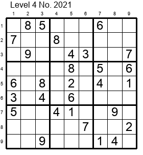

�年賀状2021年

今年の年賀状は、皆さんが私からの年賀状と鉛筆で遊べる数独（ナンプレ）としました。この1年は家にこもっていたので、年賀状に使える写真がないということもあります。
数独（ナンプレ）のルール
- あいているマスに1〜9のいずれかの数字を入れる。
- 縦・横の各列と、太線で囲まれた3×3のブロック内に、同じ数字が複数入ってはいけない。
- 数独のルールと解き方 by ニコリ (数独はニコリの登録商標です)
この問題の解き方
- この問題はナンプレ（数独）問題集のレベル4（普通）、問題番号2021です。リンク先のページからオンラインで解くことができます。
- 基本テクニックに解説されている「単独候補マス」「単独候補数字」「候補数字の配置による絞り込み」のみで解けます。
解答
解答を見る
関 勝寿